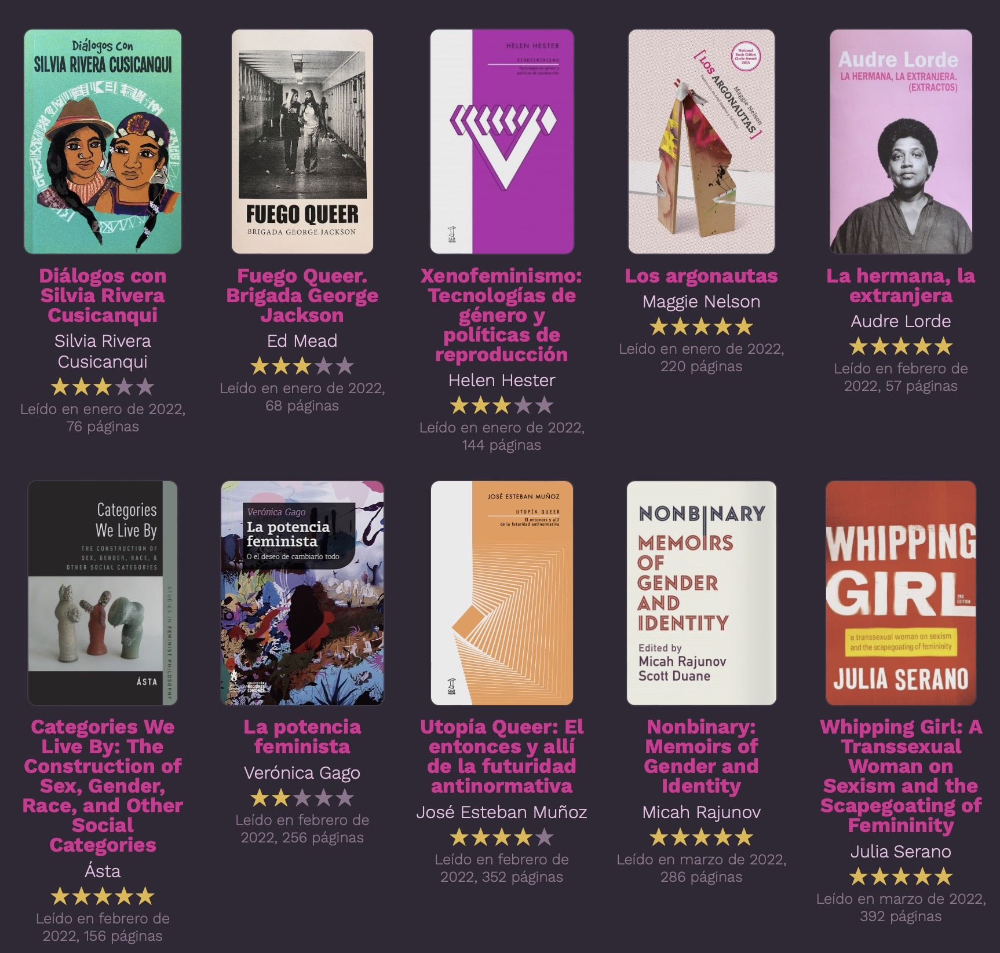

Galería de libros de Goodreads para tu blog o sitio web con R y Quarto
26/3/2026
Para mi blog personal, bastimapache.cl quise crear publicaciones que muestren los libros que he leído cada año, los cuales registro en mi cuenta de Goodreads.

Para esto, usé R para cargar el archivo de
exportación de datos de Goodreads, que te entrega un archivo .csv con tus libros leídos, puntuación, fecha de lectura, etc.
Cargar datos de Goodreads
Carguemos los datos que obtenemos de la exportación de Goodreads:
library(dplyr) # para manipulación de datos
library(readr) # para cargar datos
library(janitor) # para limpiar nombres de columnas
libros <- read_csv("goodreads_library_export.csv") |>
clean_names()
Luego le aplicamos una breve limpieza a los datos, incluyendo el paso clave que es filtrar la base de datos para tener libros de un solo año.
library(stringr)
library(glue)
library(lubridate)
libros <- libros |>
# seleccionar columnas
select(date_read,
title, author, publisher, my_rating, number_of_pages,
book_id) |>
# excluir libros que no tiene fecha de lectura
filter_out(is.na(date_read)) |>
# filtrar libros para un sólo año
filter(year(ymd(date_read)) == 2025) |>
# limpiar datos de texto
mutate(title = str_remove(title, "\\(.*\\)"),
title = str_squish(title),
author = str_squish(author))
Después de la limpieza 🧹 los datos se ven más o menos así:
libros |>
select(book_id, title, author, number_of_pages, my_rating)
# A tibble: 17 × 5
book_id title author number_of_pages my_rating
<dbl> <chr> <chr> <dbl> <dbl>
1 35411813 Las fórmulas Carol… 67 4
2 44451854 The Lost and the Damned Guy H… 426 3
3 126280622 amor 8: gordo Vario… 232 4
4 7000922 Soul Hunter Aaron… 416 0
5 59817150 Cuidados trans Hil M… 125 5
6 61875686 La invención de los sexos Lu Ci… 256 5
7 49090040 Saturnine Dan A… 553 4
8 63061873 Ir más allá de la piel: Repensar,… Silvi… 200 4
9 62925523 Feminismo posthumano Rosi … 288 3
10 44825746 Nuestra Obsoleta Mentalidad de Me… Karl … 126 4
11 18714631 Poco hombre: crónicas reunidas Pedro… 284 5
12 34466783 Fulgrim: The Palatine Phoenix Joshu… 219 2
13 55610829 The Infinite and the Divine Rober… 361 5
14 222260782 Contra el sexo como categoría bio… Lu Ci… 327 4
15 35085357 La bebedora de sangre y otros cue… Rachi… 64 5
16 160382327 Ravenor Dan A… NA 3
17 40957778 Invisible Women: Exposing Data Bi… Carol… 432 4
Si bien una cuadrícula de libros con las portadas y otros datos se podría hacer con un gráfico, pero para que la visualización se adapte a cualquier pantalla quise hacerla en HTML, de forma que si entras desde un computador se vean muchos libros a la vez, y en un celular se vean menos columnas.
Con R tenemos muchas herramientas para transformar datos en código HTML y así presentar tus datos de formas totalmente personalizadas. En este caso usé el
paquete {shiny}, que produce HTML para aplicaciones interactivas hechas con R, pero también sirve para generar todo tipo de HTML desde R.
Pero para mostrar los libros, primero necesito tener las portadas de cada uno!
Obtener las portadas de los libros
Para obtener las portadas de cada libro usaremos web scraping desde R, y así descargar las imágenes directamente desde Goodreads.
La lógica será:
- Cada libro en mi base de datos tiene un
book_idasociado a cada libro. - Con el
book_idpodemos llegar a la página de cada libro en Goodreads, porque la dirección de los libros es:https://www.goodreads.com/book/show/{book_id} - En cada página de libro en Goodreads, la portada está en un elemento con clase
.BookCover__image, que podemos usar para detectar la imagen y descargarla. - Entonces, por cada libro de la base de datos, entramos a su dirección web, extraemos la dirección de la imagen, y la descargamos:
Usamos la función map() de {purrr} para hacer un loop que pase por cada libro, y dentro del loop hacemos el web scraping y la descarga de la imagen:
library(purrr)
library(rvest)
# por cada id de libro, descarga la portada
map(libros$book_id, \(id) {
# id <- "11111"
message(id)
# crear url usando el id
url <- glue("https://www.goodreads.com/book/show/{id}")
# web scraping
# extraer imagen de portada de la dirección
imagen <- read_html(url) |>
html_elements(".BookCover__image") |>
html_element("img") |>
html_attr("src") |>
unique()
# descargar imagen
download.file(imagen,
destfile = glue("portadas/portada_{id}.jpg"))
})
El resultado será una carpeta portadas llena de imágenes de cada libro.
Naturalmente, el código que usé tiene pasos extras, como crear la carpeta si no existe, revisar si ya se descargó la portada para no volver a descargarla, y agregar un tiempo de espera entre descargas para no saturar al pobre servidor que solidariamente nos está ayudando. Puedes ver el código completo aquí.
Ahora que tenemos las portadas descargadas, agreguemos a la base de datos de libros una columna que represente la portada de cada libro, simplemente creando la ruta a la portada según su book_id:
libros <- libros |>
# columna con portadas de los libros
mutate(portada = glue("portadas/{book_id}.jpg"),
link = glue("https://www.goodreads.com/book/show/{book_id}")
)
De yapa también le pusimos una columna con el link a Goodreads de cada libro.
Creando una cuadrícula de libros
Para hacer la cuadrícula tenemos que aplicar un mismo código a cada libro, que lo haga pasar de una fila en la base a un libro bonito con imagen y sus datos, por lo que necesitaremos hacer otro loop.
Necesitamos tener los libros organizados, de forma que podamos generar un elemento HTML por cada libro. Para eso, ordenamos los libros por fecha de lectura con arrange() y luego los separamos con split() en una lista, donde cada elemento de la lista sea un libro. En otras palabras, creamos una lista donde cada elemento sea una tabla con los datos de cada libro en una sola fila.
lista_libros <- libros |>
arrange(date_read, book_id) |>
mutate(id = row_number()) |>
split(~id)
Por ejemplo, veamos el libro número 9:
lista_libros[[9]] |>
select(title, author, number_of_pages, portada)
# A tibble: 1 × 4
title author number_of_pages portada
<chr> <chr> <dbl> <glue>
1 Poco hombre: crónicas reunidas Pedro Lemebel 284 portadas/1871463…
Hagamos una prueba de la cuadrícula con un sólo libro, porque lo que nos interesa es transformar los datos en contenido HTML.
Generaremos un div, que es un elemento HTML que puede contener cualquier cosa dentro, como un contenedor para englobar nuestra cuadrícula.
Dentro de este div general, ejecutaremos un loop con la función map() de {purrr} que va a ir por cada libro de la lista, y por cada libro va a generar un nuevo div, que dentro tendrá la portada del libro correspondiente, el título, el autor, la fecha de lectura y el número de páginas.
library(shiny)
library(purrr)
salida <- div(
# loop por cada libro
map(lista_libros[9], \(libro) {
# libro individual
div(
# portada del libro
div(
a(href = libro$link, # enlace a la página del libro
img(src = libro$portada, height = 120) # imagen del libro
)
),
# datos del libro
p(libro$title),
p(libro$author),
p("Fecha:", libro$date_read),
p("Páginas:", libro$number_of_pages)
)
}) # fin del loop
)
En otras palabras, escribimos un código que genera HTML en base a un libro hipotético, pero que después nos va a permitir generar código para uno o infinitos libros gracias al loop.
Veamos qué se generó con el libro de ejemplo:
salida
Está quedando horrible! Pero funciona. Pasamos de una fila a HTML. Siempre es bueno probar la funcionalidad de las cosas antes de dedicarse a que queden bonitas.
Puntuación de cada libro
Aunque falta un detalle: las estrellas que le di a cada libro. Para eso, creamos una la función estrellas() que va a tomar la puntuación que tiene el libro, y luego va a ir del 1 al 5 viendo si la puntuación coincide con el número. Si coincide, estrellita amarilla. Si no coincide, estrellita gris.
# función para generar estrellas
estrellas <- function(rating) {
simbolo <- "\u2605"
color_punto <- "#9069c0"
color_vacio <- "#8F758F60"
# por cada número del 1 al 5, hace un span con una estrella y revisa si es parte del puntaje o no, y le asigna un color; luego retorna los 5 elementos
estrellas <- map(1:5, \(numero) {
# color dependiendo de si está dentro del rating
color <- if_else(numero <= rating,
color_punto,
color_vacio)
# estrella individual
span(simbolo,
style = glue("color: {color};
font-size: 14px; margin: 1px;")
)
})
# retornar las 5 estrellas
div(class = "estrellas", estrellas)
}
Probemos la función:
estrellas(3)
Muestra 3 estrellas de 5! Super cool y muy clever en su implementación.
Mejorando la apariencia del HTML con CSS
Ahora que tenemos funcionando el loop que genera el HTML, podemos enfocarnos en hacer que se vea mejor. Para dat estilo al HTML se usa el código CSS, y el CSS se aplica a los elementos del HTML directamente por el atributo style de cada elemento, o mediante clases.
Clases CSS
A cada elemento HTML le puedes asignar una clase, y después definir el estilo de dicha clase para que se le aplique a todos los elementos que la tengan.
Cada elemento que tenga una clase específica adquirirá la configuración que definamos en dicha clase. Así podemos darle un mismo estilo a múltiples elementos.
Personalmente primero le pongo la clase a cada elemento HTML, y después voy ajustando las clases para que quede como yo quiera.
Ver código de las clases CSS
Éstas son las clases CSS que usé para la cuadrícula de libros:
/* para cuadrícula de libros */
.cuadricula {
display: grid;
grid-template-columns: repeat(auto-fill, 120px);
grid-gap: 16px;
width: 100%;
margin: auto;
justify-content: space-evenly;
white-space: wrap;
padding-top: 18px;
}
/* contenedor de cada libro individual */
.contenedor_libro {
align-items: center;
margin: auto;
margin-top: 0;
}
.libro_imagen {
margin: auto;
text-align: center;
margin-bottom: 12px;
border-radius: 3px;
opacity: 97%;
img {
height: 160px;
border-radius: 4px;
border: solid 1px #31243B70;
}
}
.libro_titulo {
margin: auto;
text-align: center;
margin-bottom: 4px;
font-weight: bold;
color: $foreground2;
text-decoration: none !important;
font-size: 90%;
line-height: 1;
margin-top: -4px;
}
.libro_autor {
margin: auto;
text-align: center;
text-decoration: none !important;
font-size: 78%;
}
.estrellas {
display: inline-flex;
}
.estrella {
font-size: 14px;
margin: 1px;
}
.libro_rating {
margin: auto;
text-align: center;
}
.libro_paginas {
margin: auto;
text-align: center;
opacity: 50%;
font-size: 65%;
margin-top: 1px;
}
Cuadrícula de libros con estilo personalizado
A continuación mejoramos el código anterior, poniéndole clases a todos los elementos para que se les aplique el CSS y así poder personalizarlos, y también incluiremos la puntuación con estrellas y otros detalles:
library(shiny)
# contenedor principal que contiene todos los libros dentro
div(class = "cuadricula",
# generar elementos por cada libro
map(lista_libros, \(libro) {
# libro individual
div(class = "contenedor_libro",
# portada del libro
div(class = "libro_imagen",
a(href = libro$link, # enlace de la imagen
img(src = libro$portada, # ruta a la imagen
alt = libro$title) # texto alternativo
)
),
# datos del libro
p(class = "libro_titulo",
libro$title),
p(class = "libro_autor",
libro$author),
div(class = "libro_rating",
estrellas(libro$my_rating)),
# texto con fecha de lectura y número de páginas
p(class = "libro_paginas",
glue("Leído en el {month(libro$date_read)} de {year(libro$date_read)}, {libro$number_of_pages} páginas")
)
)
})
)
Invisible Women: Exposing Data Bias in a World Designed for Men
Caroline Criado Pérez
Leído en el 2 de 2025, 432 páginas
Contra el sexo como categoría biológica: Cómo desmontar las premisas sexistas que limitan nuestra vida
Lu Ciccia
Leído en el 7 de 2025, 327 páginas
Ir más allá de la piel: Repensar, rehacer y reivindicar el cuerpo en el capitalismo contemporáneo
Silvia Federici
Leído en el 10 de 2025, 200 páginas
Hermoso! 😍 Ahora, como mi blog personal está hecho con Quarto, simplemente puedo copiar este código y cambiar el año del filtro para hacer publicaciones automáticas por cada año.
Esa es una de las gracias de Quarto: incluir código de R dentro de tus documentos, páginas web o publicaciones de blog, para generar contenido en base a datos! Crear tu propio sitio con Quarto es súper fácil!